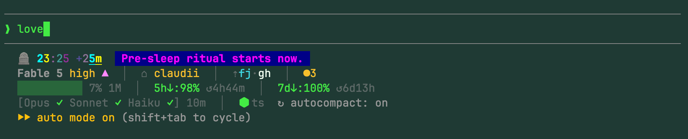

claudii█
Claude Code session intelligence in your shell.
token usage · prompt-cache hit rate · costs · rate limits · model health
Opus xhigh ▲ ████████░░ ⚡73% 5h:28% 7d:12% eta:4h +47/-12 api:23m 12.4k↑ 4.2k↓ 23m feature-branch ⌂ gateii claude ✓ │ @orchestrate
the real thing, in a real terminal

and claudii bare — the whole picture on demand · rendered live, not a screenshot
claudii v0.25.0 ● Account 5h↓: 41% ↺2h48m (04:10) │ 7d↓: 68% ↺5d02h (Wed 13:00) │ 2.8M tok today (8 sessions) ● Usage last 30d ▂▃▄▃▂▄▅▄▆▅▄▃▄▅▆▄▃▄▅▄▃▂▃▄▅▄▃▄▆▅ today 2.8M │ avg 3.1M/d │ peak 7.2M → claudii tokens · claudii cost ○ Sessions 2 active sessions │ 14 inactive → claudii se · claudii si ● Activity last 30d █████████████████████████████ → claudii vibemap · claudii vibemap grid ● Agents 8 agents │ 5 shell aliases haiku hk/high · sh/high sonnet sn/high · snmax/max opus op/high · opl/low · opm/medium · orc/medium shell cl · clf · clm · clo · clq → claudii agents ● Services ● ClaudeStatus [claude ✓] ● Dashboard ● CC-Statusline ● Commands each runs as claudii <command> sessions se · si · session · pin · unpin · gc · resume cost cost · trends · skills-cost insights tokens · perf · tools · limits · cache · vibemap display on · off · claudestatus · session-dashboard · cc-statusline config config · agents · omlx · vpnii · search system status · doctor · explain · update · version · changelog → claudii help · man claudii
Install
$ brew tap bmmmm/tap && brew install claudii $ claudii on # enable the in-session status line
Three layers, all read-only
- 1. CC-Statusline — dense metrics inside Claude Code, every turn
- 2. Session Dashboard — active sessions above your shell prompt
- 3. ClaudeStatus — model health in your RPROMPT, never blocks
And in your terminal, on demand
$ claudii cost — where the spend goes, per model
Week $48.20 · 6.4M tok ─────────────────────────────────────────────── Opus $44.80 ████████████████████████░ 93% Sonnet $3.31 █░░░░░░░░░░░░░░░░░░░░░░░░░ 7% Haiku $0.09 ░░░░░░░░░░░░░░░░░░░░░░░░░░ 0%
$ claudii skills-cost — cost per skill, plugin & MCP server
Skill Calls Tot $ Model ─────────────────────────────────── code-review 184 $18.40 mixed orchestrate 92 $12.10 Opus 4.8 deep-research 23 $4.80 Opus 4.8 memory-gc 41 $3.20 mixed
$ claudii vibemap grid — when you actually code
Mon Tue Wed Thu Fri Sat ▶Sun 00-06 █ ▒ █ ▒ █ ░ ░ 06-12 ▒ ░ ▓ █ █ ░ ▒ 12-18 ░ ▒ ▓ ▓ █ ▒ ▓ 18-00 ▒ ░ ▒ ░ ░ ░ ▒ ░ ▒ ▓ █ density · ▶ today
$ claudii trends — your daily token rhythm
Daily tokens spend sess ───────────────────────────────────────── Today 420K ██░░░░░░░░░░░ $12.40 4 Fri 1.8M ████████░░░░░ $48.90 11 Thu 2.4M ███████████░░ $61.20 9 Wed 3.1M █████████████ $79.10 14 Tue 2.0M █████████░░░░ $52.30 10
$ claudii perf — latency percentiles & throughput
● p50 7.1s p90 28.8s p99 1m54s 66 tok/s ○ TTFT p50 2.4s ✓ success 99% ──────────────────────────────────────────── Opus 4.8 8.2s 33.3s 2m02s 67/s Sonnet 4.6 6.2s 20.0s 1m28s 50/s Haiku 4.5 2.7s 6.8s 32.7s 76/s
$ claudii limits — when your 5h-budget hits land
⚠ Rate limits 14× · last 30 days · 5h budget by day Sun 14 Jun ████████████ 6× Fri 12 Jun ██████░░░░░░ 3× Wed 10 Jun ████░░░░░░░░ 2× Sat 06 Jun ██░░░░░░░░░░ 1× when ██░█░███░██░░░█ ~01:00 cluster
All of it read straight from Claude Code's local session JSONL (and an optional local OpenTelemetry receiver for exact latency). No telemetry, no API calls on your behalf — nothing leaves your machine.